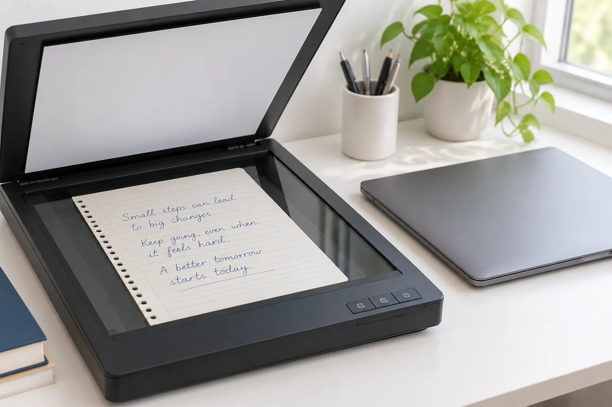

深圳线上收到的扫描PDF可以复制文字，还需要保留图片吗
扫描文件经过文字识别后，能搜索内容很方便。不过可复制的文本不等于原稿本身，识别错误也可能藏在看似正常的句子里。

识别文本只是辅助层
深圳模仿笔迹资料通过PDF传递时，文字识别方便查找，却可能漏掉连写、涂改和不常见字。原页面图像仍需保留，不能因为可以复制文本就删除图片。目录中的关键词可以从识别结果提取，但重要名称、日期和页码应对照原图检查。
复制出来的排版不代表原布局
识别工具可能重新排列段落，将分栏文字拼成一行。若要观察字距、行距和页面留白，应回到图像，而不是使用复制后的文本截图。整页与局部各有用途，原始扫描和阅读副本分开存放，才能说明后续每处观察所依据的版本。
姓名尤其需要人工核对
模仿签名、模仿签字的字形可能被识别成相近汉字或无意义字符。不要把识别结果直接当作署名身份，也不根据纠正后的文本重做一张所谓参考图。姓名局部保留来源页，不能读清的地方注明待核实，比自动补成常见姓名更准确。
文件来源写在清单中
笔迹鉴定资料应说明PDF来自扫描、照片合并还是已有文档转换。可搜索功能不能证明它保留了全部细节。收到文件后逐页检查清晰度，需要补图时按页码找原文件，不必反复导出同一份压缩PDF来增加版本数量。